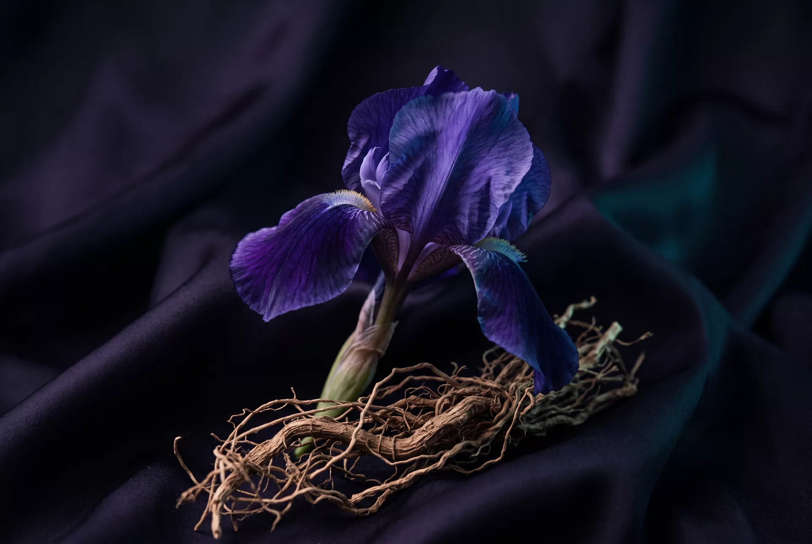
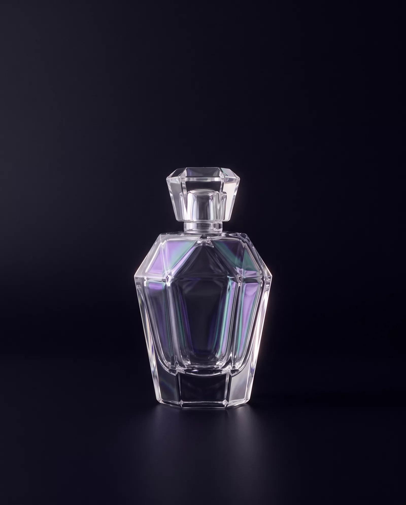

Lueur
White bergamot, frozen pear, a breath of pink pepper. The first gleam: citrus cut so fine it reads as temperature, not fruit. It arrives cold and leaves warm.
Maison de Parfum — Paris · Grasse
Light, distilled into scent.
Nine years of composition. Two hundred and twelve trials set aside. One essence kept — Éclat N°1, an iridescence you wear.
Discover the Éclat01 — The Philosophy
A perfume, like a pearl, owes its beauty to interference — layers so thin they turn white light into colour.
Maison LUMEN composes in strata. Each material is laid down as a translucent film over the last: an aldehyde over an iris, a musk over a mineral hush. Worn on skin, the layers shift with warmth and hour, so the perfume is never the same colour twice.
We call this discipline la lumière portée — carried light. It demands restraint. Where other houses add, we remove, until only the interference remains: the shimmer between the notes, the silence that makes them audible.
02 — The Composition
Éclat N°1 unfolds the way dawn does — a cold gleam, a warm centre, a long shadow. Follow the orbs; they drift as the perfume does.
White bergamot, frozen pear, a breath of pink pepper. The first gleam: citrus cut so fine it reads as temperature, not fruit. It arrives cold and leaves warm.
Iris pallida, silk musk, moonlit jasmine. The centre of the perfume and of the maison: an iris ground for six weeks, folded into musk until it moves like fabric.
White amber, blond woods, a memory of incense. A bright shadow that stays past midnight — the interference pattern the whole composition was built to leave behind.


03 — L'Objet
The flacon is not a container. It is the first instrument the perfume plays.
Each bottle is hand-cut in a single Meisenthal workshop, its shoulders angled at 47 degrees — the angle at which the crystal splits a north-facing window into violet and sea-green. Set it on a sill and the room wears the perfume before you do.
The prism stopper is ground to the bottle it seals and to no other. Separated, neither closes cleanly again; we engrave both with the same number so they are never parted.
04 — Le Sillage
A perfume is judged not on skin but in the metre of air behind the one who wears it.
Pressed once, the flacon gives up a veil finer than breath. For a moment the mist holds the bottle's own colours — violet on one curl, sea-green on the next — before it settles into the wake we call le sillage: carried light, at walking pace.
We tune Éclat N°1 to this measure. Not the first minute, but the corridor after you have passed through it.
05 — The Atelier
LUMEN keeps a single atelier above the old mimosa terraces of Grasse: one still, one organ of two hundred materials, one north window. Nothing is composed after dark — the maison works only in the light it is named for.
There is no second fragrance in development. There may never be. A maison that bends light cannot hurry it; Éclat N°1 will remain alone until something exceeds it.
“I wanted a perfume you could not describe, only recognise — the way you recognise light on silk from across a room.” — The Perfumer, Maison LUMEN